RADIUS Load Balancing - NetScaler 12
Navigation
Change Log
- 2018 Feb 17 - in RADIUS Monitor section, added Microsoft Network Policy Server Ping User-Name. (Source = Stefano Losego in the comments)
- 2017 Dec 25 – updated entire article for 12.0 build 56. Monitor section has new build 56 instructions.
RADIUS Load Balancing Overview
One method of two-factor authentication to NetScaler Gateway is the RADIUS protocol with a two-factor authentication product (tokens) that has RADIUS enabled.
RADIUS Clients and Source IP - On your RADIUS servers, you’ll need to add the NetScaler appliances as RADIUS Clients. When NetScaler uses a local (same appliance) load balanced Virtual Server for RADIUS authentication, the traffic is sourced from the NetScaler SNIP (Subnet IP). When NetScaler uses a direct connection to a RADIUS Server without going through a load balancing Virtual Server, or uses a remote (different appliance) Load Balancing Virtual Server, the traffic is sourced from the NetScaler NSIP (NetScaler IP). Use the correct IP(s) when adding the NetScaler appliances as RADIUS Clients. And adjust firewall rules accordingly.
- For High Availability pairs, if you locally load balance RADIUS, then you only need to add the SNIP as a RADIUS Client, since the SNIP floats between the two appliances. However, if you are not locally load balancing RADIUS, then you’ll need to add the NSIP of both appliances as RADIUS Clients. Use the same RADIUS Secret for both appliances.
RADIUS Monitor and Static Credentials - When load balancing RADIUS, you’ll want a monitor that verifies that the RADIUS server is functional. The RADIUS monitor will login to the RADIUS server and look for a response. The credentials in the load balancing monitor must have a static password.
- If you don't mind failed login attempts in your RADIUS logs, you can specify fake credentials in your load balancing monitor. The monitor would be configured to expect a login failure response, which means that at least a RADIUS service is responding to the monitor. Not as accurate as a successful login response, but better than ping.
- Microsoft Network Policy Server supports a fake Ping User-Name. (Source = Stefano Losego in the comments)
- The only other monitoring option is Ping. No credentials needed for this option. Adjust the firewall to allow ping to the RADIUS servers.
Active/passive load balancing - If you have RADIUS Servers in multiple datacenters, you can create multiple load balancing Virtual Servers, and cascade them so that the local RADIUS Servers are used first, and if they’re not available, then the Virtual Server fails over to RADIUS Servers in remote datacenters.
RADIUS Monitor
The RADIUS Monitor attempts to successfully log into the RADIUS server. For RSA, create an account on RSA with the following parameters as mentioned by Jonathan Pitre:
- Setup a user with a fixed passcode in your RSA console.
- Ensure you login with that user at least once to the RSA console because you'll be asked to change it the first time.
- There is no need to assign a token to your monitor user as long as you are using a fixed passcode. You don’t want to waste a token on a user just for monitoring.
Henny Louwers - Configure RSA RADIUS monitoring on NetScaler.
12.0 build 56 and newer
Monitor instructions changed in 12.0 build 56 and newer. If your build is older than build 56, then jump to the older Monitor instructions.
- In the NetScaler Configuration Utility, on the left, under Traffic Management > Load Balancing, click Monitors.
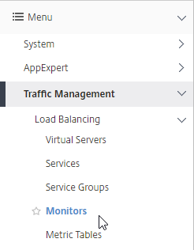
- On the right, click Add.
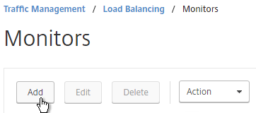
- Name the monitor RSA or similar.
- In the Type field, click where it says Click to select.
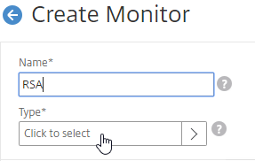
- Scroll down and click the circle next to RADIUS.
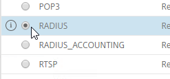
- Scroll up and click the blue Select button.
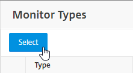
- In the Basic Parameters section, you might have to increase the Response Time-out to 4.
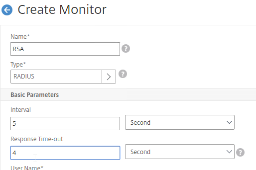
- In the Basic Parameters section, do the following:
- Enter valid RADIUS credentials. Make sure these credentials do not change or expire. For RSA, in the Password field, enter the fixed passcode.
- Microsoft Network Policy Server supports a fake Ping User-Name. (Source = Stefano Losego in the comments)
- Enter the RADIUS key (secret) configured on the RADIUS server for the NetScaler as RADIUS client.
- For Response Codes, add both 2 and 3. 2 means success, while 3 indicates some kind of failure. Either result means that the RADIUS server is responding, and thus is probably functional. But 2 is the ideal response.
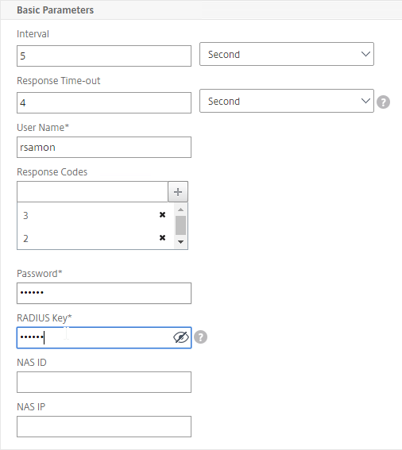
- Enter valid RADIUS credentials. Make sure these credentials do not change or expire. For RSA, in the Password field, enter the fixed passcode.
-
Scroll down and click Create.
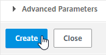
-
Jump to the Servers section.
12.0 older than build 56
- In the NetScaler Configuration Utility, on the left, under Traffic Management > Load Balancing, click Monitors.
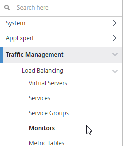
- On the right, click Add.
- Name the monitor RSA or similar.
- Change the Type drop-down to RADIUS.
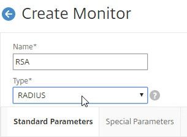
- On the Standard Parameters tab, you might have to increase the Response Time-out to 4.
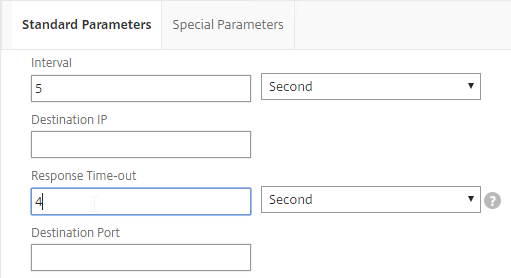
- On the Special Parameters tab, do the following:
- Enter valid RADIUS credentials. Make sure these credentials do not change or expire. For RSA, in the Password field, enter the fixed passcode.
- Also enter the RADIUS key (secret) configured on the RADIUS server for the NetScaler as RADIUS client.
- For Response Codes, add both 2 and 3. 2 means success, while 3 indicates some kind of failure. Either result means that the RADIUS server is responding, and thus is probably functional. But 2 is the ideal response.
-
Click Create when done.
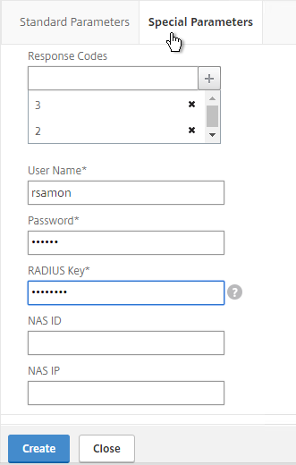
Servers
- On the left, expand Traffic Management, expand Load Balancing, and click Servers.
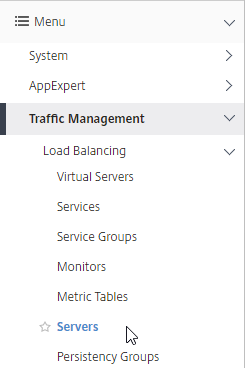
- On the right, click Add.
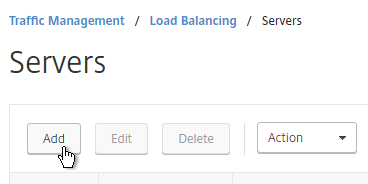
- Enter a descriptive server name; usually it matches the actual server name.
- Enter the IP address of the RADIUS server.
-
Enter comments to describe the server. Click Create.
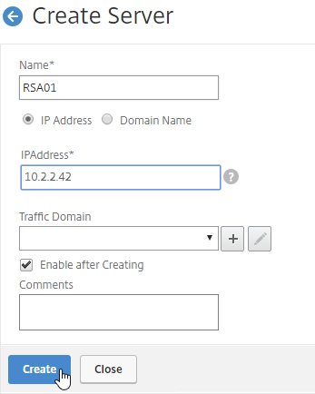
-
Continue adding RADIUS servers.
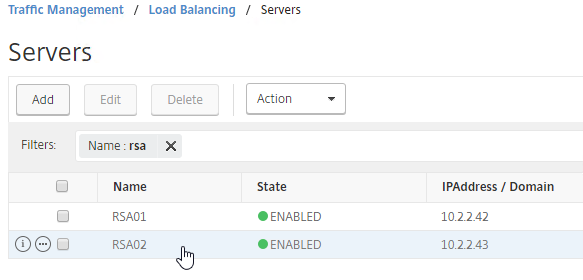
Service Groups
- On the left, expand Traffic Management, expand Load Balancing, and click Service Groups.
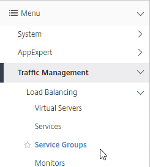
- On the right, click Add.
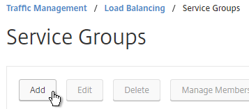
- You will create one Service Group per datacenter. Enter a name reflecting the name of the datacenter.
- Change the Protocol to RADIUS.
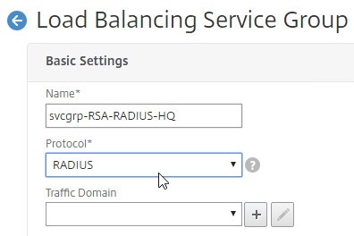
- Scroll down, and click OK, to close the Basic Settings section.
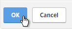
- On the left, in the Service Group Members section, click where it says No Service Group Member.
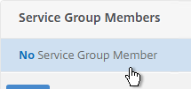
- If you did not create server objects, then enter the IP address of a RADIUS Server in this datacenter. If you previously created a server object, then change the selection to Server Based, and select the server object(s).
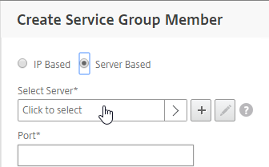
- In the Port field, enter 1812 (RADIUS).
- Click Create.
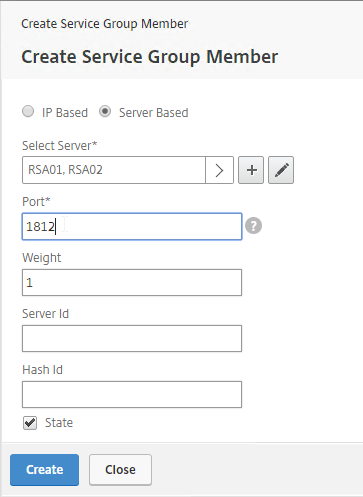
- If you did not create server objects, then enter the IP address of a RADIUS Server in this datacenter. If you previously created a server object, then change the selection to Server Based, and select the server object(s).
- Click OK when done adding members.
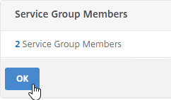
- On the right, in the Advanced Settings column, click Monitors.
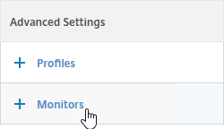
- On the left, in the Monitors section, click where it says No Service Group to Monitor Binding.
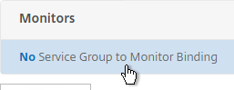
- In the Select Monitor field, click where it says Click to select.
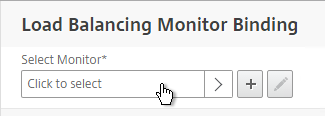
- Click the circle next to your new RADIUS monitor. It might be on page 2.
- You must click the circle exactly (no room for error). If you click outside the circle, then the monitor will be opened for editing. If this happens, click Close to return to the selection screen.
- At the top of the window, click the blue Select button.
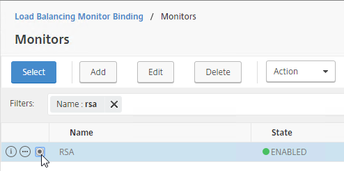
- Click Bind.
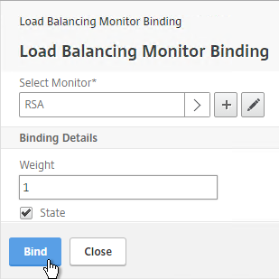
- On the left, in the Monitors section, click where it says No Service Group to Monitor Binding.
- To verify the members are up, click in the Service Group Members section.
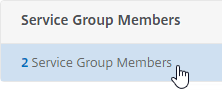
- Right-click a member, and click Monitor Details.
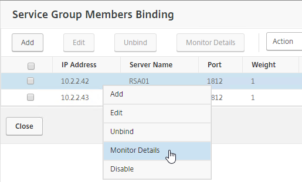
- It should say Radius response code 2 (or 3) received. Click Close twice.
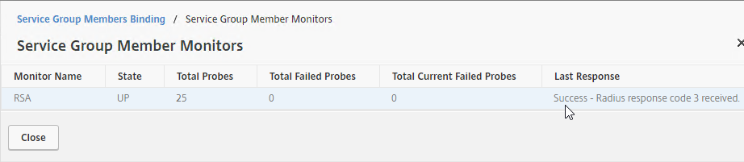
- Right-click a member, and click Monitor Details.
-
Scroll down, and click Done to finish creating the Service Group.
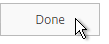
-
Add additional service groups for RADIUS servers in each data center.
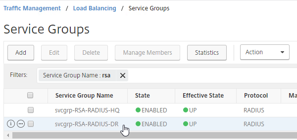
Virtual Server
- On the left, expand Traffic Management, expand Load Balancing, and click Virtual Servers.
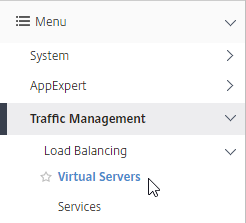
- On the right, click Add.
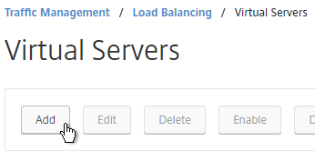
- In the Basic Settings section, do the following:
- Name it lbvip-RADIUS-HQ or similar. You will create one Virtual Server per datacenter so include the datacenter name.
- Change the Protocol drop-down to RADIUS.
- Enter a Virtual IP. This VIP cannot conflict with any other IP + Port already being used. You can use an existing VIP if the VIP is not already listening on UDP 1812.
- Enter 1812 as the Port.
- Click OK to close the Basic Settings section.
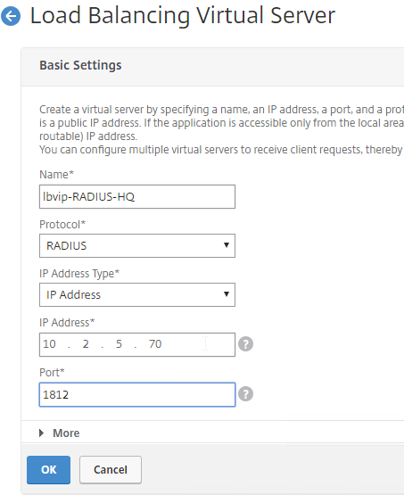
- In the Services and Service Groups section, click where it says No Load Balancing Virtual Server ServiceGroup Binding.
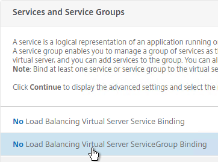
- Click where it says Click to select.
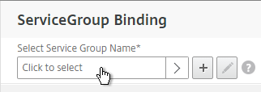
- Click the circle next to a previously created Service Group. It might be on Page 2.
- You must click the circle exactly (no room for error). If you click outside the circle, then the Service Group will be opened for editing. If this happens, click the x on the top right, or click Done on the bottom, to return to the selection screen.
- At the top of the window, click the blue Select button.
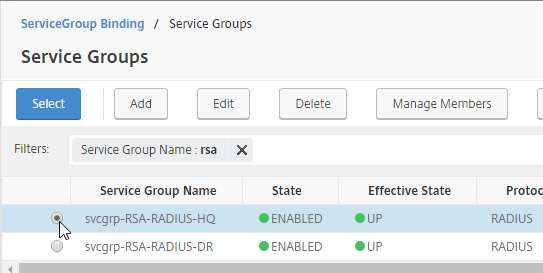
- Click Bind.
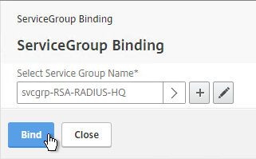
- Click where it says Click to select.
- Click Continue.
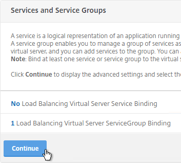
- On the right, in the Advanced Settings section, click Method.
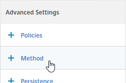
- On the left, in the Method section, do the following:
- Change the Load Balancing Method to TOKEN.
- In the Expression box, enter CLIENT.UDP.RADIUS.USERNAME.
- Click OK to close the Method section.
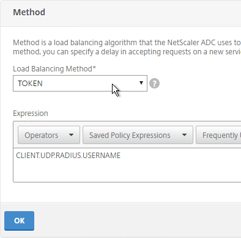
- On the right, in the Advanced Settings section, click Persistence.
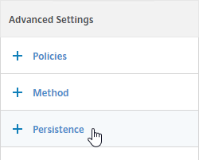
- On the left, in the Persistence section, do the following:
- Change Persistence to RULE. Note: 12.0 build 56 and newer is slightly different than older builds.
- In the Expression box, enter CLIENT.UDP.RADIUS.USERNAME.
- Click OK to close the Persistence section.
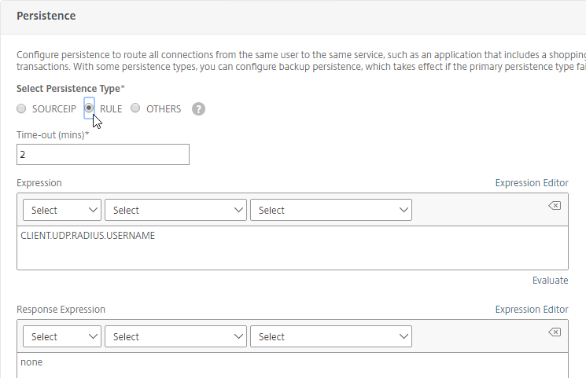
- Scroll down and click Done to finish creating the Virtual Server.
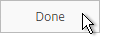
-
If you are configuring this RADIUS Load Balancer for more than just NetScaler Gateway, you can add another Load Balancer on port 1813 for RADIUS Accounting. Then you need a Persistency Group to tie the two load balancers together. See Configuring RADIUS Load Balancing with Persistence at Citrix Docs.
-
The new Virtual Server should show as Up. If not, click the Refresh icon on the top right of the screen (not the browser refresh).
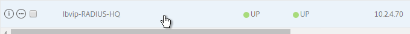
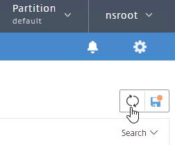
Active/Passive Load Balancing
-
Create additional Virtual Servers for each datacenter.
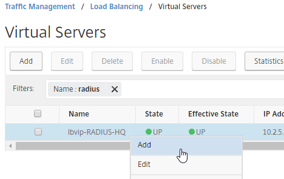
-
These additional Virtual Servers do not need a VIP. so change the IP Address Type to Non Addressable. Only the first Virtual Server will be directly accessible.
-
Notice that the additional datacenter Virtual Servers have an IP Address of 0.0.0.0 and port of 0.
- After you are done creating a Virtual Server for each datacenter, right-click the primary datacenter’s Virtual Server, and click Edit.
- On the right, in the Advanced Settings column, click Protection.
- On the left, in the Protection section, change the Backup Virtual Server to one of the other datacenter Virtual Servers. If all of the services in this datacenter are DOWN, the backup Virtual Server will be used instead. You can cascade multiple Virtual Servers using this method. Click OK and Done.
-
-
You may now use this Virtual IP in your RADIUS authentication policies for NetScaler Gateway or NetScaler management login.
CLI Commands
Here is a list of CLI Commands for RADIUS load balancing.
# Load Balancing Global Parameters
# --------------------------------
enable ns mode FR L3 Edge USNIP PMTUD ULFD
set ns tcpParam -WS ENABLED -SACK ENABLED
# Monitors
# --------
add lb monitor RSA RADIUS -respCode 2-3 -userName rsamon -password Passw0rd -encrypted -encryptmethod ENCMTHD_3 -radKey Passw0rd -encrypted -encryptmethod ENCMTHD_3 -LRTM DISABLED -resptimeout 4
# Servers
# -------
add server RSA01 10.2.2.42
add server RSA02 10.2.2.43
# Service Groups
# --------------
add serviceGroup svcgrp-RSA-RADIUS-DR RADIUS -maxClient 0 -maxReq 0 -cip DISABLED -usip NO -useproxyport NO -cltTimeout 120 -svrTimeout 120 -CKA NO -TCPB NO -CMP NO
bind serviceGroup svcgrp-RSA-RADIUS-DR RSA01 1812
bind serviceGroup svcgrp-RSA-RADIUS-DR -monitorName RSA
add serviceGroup svcgrp-RSA-RADIUS-HQ RADIUS -maxClient 0 -maxReq 0 -cip DISABLED -usip NO -useproxyport NO -cltTimeout 120 -svrTimeout 120 -CKA NO -TCPB NO -CMP NO
bind serviceGroup svcgrp-RSA-RADIUS-HQ RSA02 1812
bind serviceGroup svcgrp-RSA-RADIUS-HQ -monitorName RSA
# Load Balancing Virtual Servers
# ------------------------------
add lb vserver lbvip-RADIUS-DR RADIUS 0.0.0.0 0 -persistenceType NONE -cltTimeout 120
bind lb vserver lbvip-RADIUS-DR svcgrp-RSA-RADIUS-DR
add lb vserver "lbvip-RADIUS HQ" RADIUS 10.2.5.70 1812 -persistenceType RULE -lbMethod TOKEN -rule CLIENT.UDP.RADIUS.USERNAME -cltTimeout 120 -backupVServer lbvip-RADIUS-DR
bind lb vserver "lbvip-RADIUS HQ" svcgrp-RSA-RADIUS-HQ